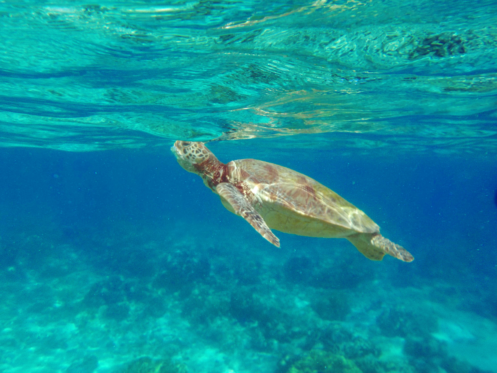
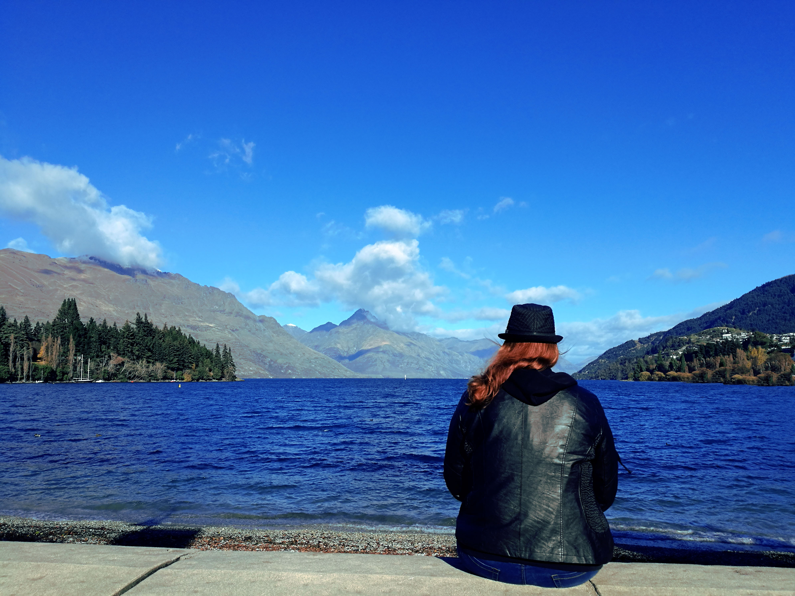

Color Correction
Turtle in Cairns


- The main colors edited are blue and green.
- The colors are edited in two layers.
- The blue colors have been turned as blue as possible without looking wierd.
- The green on the turtle has been given a lot of yellow to get a more brownish color.
View in Queenstown


- The main color edited is blue to make the sky darker,
and the water more blue as to reflect the sky.
- The boats on the right side has been removed.
- The greens and yellows have been edited to give the trees more life.